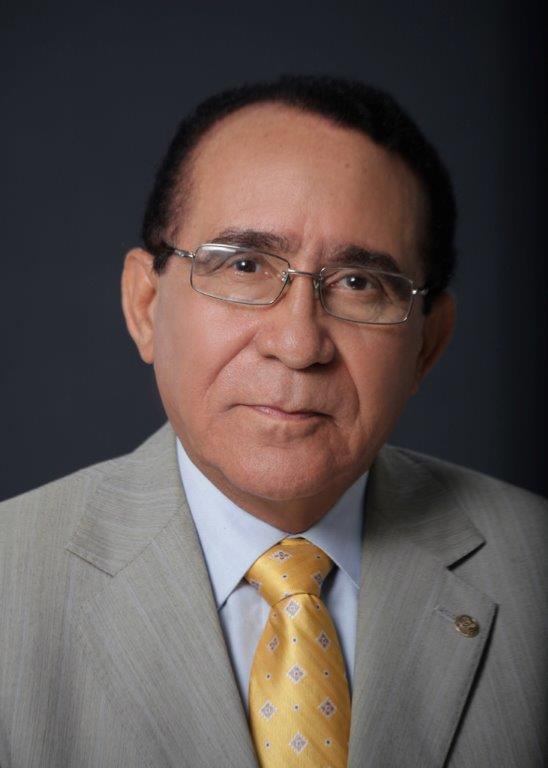

entra para ver opciones e instrucciones de pago
DISCURSO PRONUNCIADO POR EL DR. PRÍAMO RODRÍGUEZ CASTILLO, CANCILLER DE LA UNIVERSIDAD TECNOLÓGICA DE SANTIAGO, UTESA, EN LA SEPTUAGÉSIMA SÉPTIMA GRADUACIÓN ORDINARIA DEL RECINTO SANTO DOMINGO DE GUZMÁN, CELEBRADA EL SÁBADO 20 DE FEBRERO DE 2016. SANTO DOMINGO, DISTRITO NACIONAL.

Ser un hacedor es llegar a ser poseedor de una imaginación positiva. Por ello, ustedes, graduandos, han
logrado hoy un resultado de sueño; es decir, hacer realidad hoy el resultado del esfuerzo de toda la vida,
estimulados por la idea de construir su futuro bajo una práctica de todos los días; haciendo bajo la luz y
el sol una siembra de esperanza, a través de una decisión que alimenta el emprender, y participa haciendo y
desarrollando una carrera profesional que tiene como meta alcanzar algo de gran valor, cuyos quilates
tendrán tanta fuerza como ánimo para seguir soñando: querer hacer más para ser más.
Se dice que los sueños son regalo de Dios, que necesitan ser alimentados siempre consciente o
inconscientemente por la familia, los amigos, los amores, en general; y, ciertamente han tenido que ver en
gran medida con el resultado de hoy. Obtener este grado ha exigido retos que cambian vuestras vidas,
vuestra visión y futuro; es decir, que la profesión proporciona a la persona una dimensión asumida en la
sociedad o entorno donde viven o van a vivir como estatus profesional. Han adquirido unas ideas, un
conocimiento, una experiencia y vivencia de estudio que los lleva a un nuevo nivel en el saber, en el
conocer y en el hacer. De acuerdo a lo que encontramos y queremos hacer podremos manifestarnos como
personas cargadas de la capacidad para construir el camino que soñamos, para llegar a ser todo lo que
queremos y somos capaces de hacer, para lograr de los sueños una vida digna y caracterizada por el
bienestar. Es una oportunidad que permite lograr la felicidad.
Esta es tu visión, es un producto propio, construido por ti mismo, en el que debes confiar toda la vida,
porque es la recompensa de tu compromiso y esfuerzo; él te traerá el éxito, te servirá para triunfar y
llegar hasta donde quieras. Llegamos a ser ganadores de nuestro destino, rango en el que nos sitúa la vida
a través de nuestro esfuerzo. Sin embargo, debemos ser críticos y aceptar las críticas; este es un
ingrediente en el proceso de superación, manteniendo los principios y valores, sin permitir que se pierdan;
y si un día sucede, tener la capacidad para volver de nuevo a seguir los sueños que siempre deben
permanecer en el profesional bien calificado, cuya capacidad, calidad humana y sabiduría nunca debe
acabarse.
Eso es luchar, sí, es necesario trabajar, aportar y hacer más, confiemos más en nosotros para nuestro
beneficio y de nuestra sociedad; ello nos permitirá ganar la batalla y con la experiencia y sabiduría se
hace real el hecho, otro sueño visionario que produce una hermosa imagen del profesional que simplemente
debe caminar con entusiasmo, y con una conducta característica del ser humano sano y emprendedor, capaz de
convertir sus aspiraciones en bienestar para vivir mejor y compartir las alegrías que nos trae la vida por
nuestro obrar bien. De acuerdo a la esencia que nos regala Dios, cuando lo buscamos nos merecemos el
espíritu que fortalece la libertad humana de sobreponernos y levantarnos sobre cualquier tempestad, que
encontremos en ese camino que en la existencia humana sentimos como adversidad; pero sabemos que somos
capaces de superar las circunstancias adversas, y dar sentido positivo a nuestros conocimientos y
entusiasmo; con ellos lograremos el propósito de bienestar y la capacidad de compartirlo y vivirlo rodeados
de las demás personas.
Enfoquemos, ahora, lo expuesto en lo tratado hasta el momento, bajo otra perspectiva. El profesional que
recién se gradúa debe tener un propósito muy particular que sería no soñar, sino permanecer despierto
observando el propósito de su vida. Esta actitud será un reto para el corazón y para la razón. Muchas veces
el corazón va dando respuesta de forma personal, rompiendo los esquemas normales de los deseos en el querer
hacer cosas que no son comunes en el ejercicio profesional. Esto se trata, más bien, de la intuición que
impulsa a hacer las cosas de un modo mejor que lo común o lo establecido. Cada persona en momentos así debe
apoyarse en su realidad particular, en su yo interno, lo que quiere en la vida y lo que cree que debe hacer
en su desarrollo profesional. Pero, combinando lo anterior con lo que se supone que está esperando la
sociedad del nuevo profesional, sus familiares, sus amigos, y lo que tiene reservado el medio. Sabemos que
los pensamientos, las preocupaciones y la conciencia envían ideas, mensajes y señales que también pueden
servir de modo y guía para lograr propósitos. Obviamente, estas son observaciones que tienden a variar y
producir resultados que afectan la vida.
Este conjunto de reflexiones invitan a tomar conciencia de las diferentes preocupaciones en busca de
respuestas, a la problemática del ejercicio de su carrera profesional.
La elección de una carrera profesional debe ser cónsona con la visión y las valoraciones de la persona,
para que el éxito académico exprese un sentimiento de orgullo y satisfacción, tanto en lo material como en
lo espiritual, en la paz interna que trae una liberación de expectativas, que normalmente impulsan el
corazón en contraste con la razón, provocando emociones que encierran tanto alegría como amargura.
Se trata, por tanto, de explorar este poder del corazón y la razón, como energía motivadora del nuevo
profesional que se presenta en los inicios del ejercicio profesional.
Obviamente, la carencia de experiencia profesional en la etapa inmediatamente posterior a su graduación,
despierta unas expectativas en sus primeras experiencias.
Según nuestra experiencia, lo importante es iniciarse en el ejercicio profesional; en el camino se va
adquiriendo la experiencia y la cultura de la profesión. Se advertirá la influencia del contraste entre el
corazón y la razón, logrando de ese modo modificar la visión, sobre el desempeño profesional.
He querido, graduandos, exponer brevemente algunas ideas y las intuiciones que permiten esclarecer las
fortalezas humanas del nuevo profesional, aprovechando sus capacidades con más conciencia, es decir, con
más éxitos y menos fracasos.
Sabemos que todo pensamiento debe conducir a una concreción inspiradora para lograr sus mejores propósitos.
Ello permite disfrutar una mejor vida social, bajo la iluminación de la conciencia, descubriendo y
desplegando sus capacidades para desempeñarse con éxito.
Mantengan siempre el sueño de la esperanza y la fe, y busquen siempre el remanso de paz que Dios nos da.
Así alcanzarán sus metas y lograrán sus objetivos. Así, podrán hacer de sus sueños sus realidades de vivir,
y compartir sus vidas, con dignidad, con bienestar, con amor y paz.
¡Que sean felices!, y si algún día no encuentran esa felicidad, acérquense a su Universidad, para que
juntos podamos lograrla. Estamos seguros de que venceremos.
En buena hora y que Dios los bendiga.
Muchas gracias